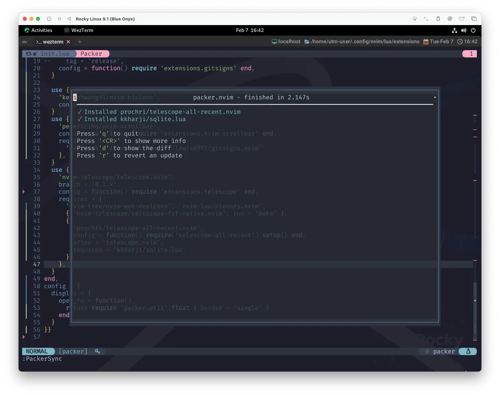
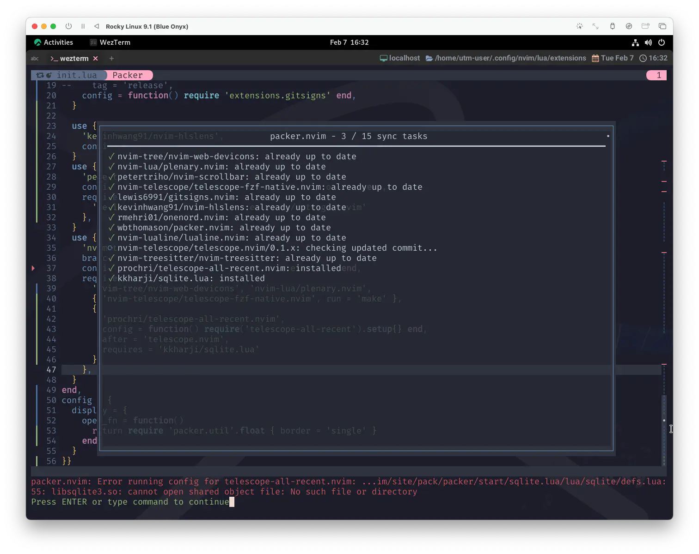
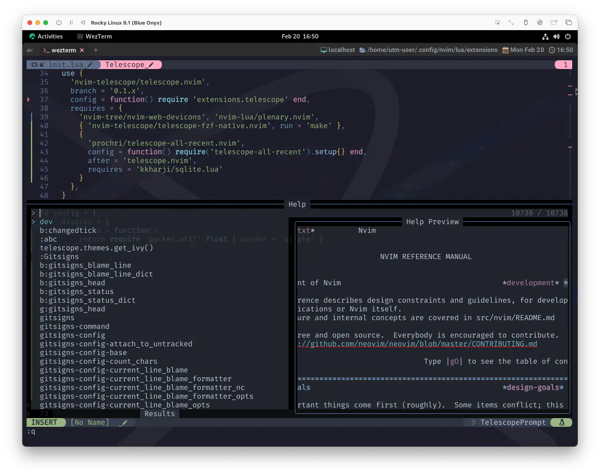

telescope-all-recent.nvim
...いえ、狙ってるわけじゃないんですけど、ほんと❗
月の満ち欠けに合わせないと書けないとかそういうわけじゃないんです、ほんと😅
...なんですが、たまたま、今日はまた新月でした 🌑 見上げれば、いつにも増して星が綺麗に輝いて見えるはずです✨
なんとか繋がりましたね✨ 今回は予告通り新星のおはなしです❗
(F)recency sorting for all Telescope pickers.
全ての Telescope picker に Frecency ソートを提供します。
Very hacky solution, overriding telescope internals to provide recency/frecency sorting for any picker.
telescope 内部をオーバーライドして、任意の picker に対して 再帰性/頻度ソート を提供する、非常にハックなソリューションです。
わたしがこれを知ったのは、telescope.nvimのリポジトリを色々覗いている中で、こんなのを見つけたからです。
@otavioschwanck
Doom Emacs already brings something like that. VSCode too. Is super useful to have the recent picks at the top of any picker.
Doom Emacs は既にそのようなものをもたらしています。VSCodeも。ピッカーの一番上に最近のピックがあるのは超便利です。
"super useful"❗訳して「超便利」❗
それは...ねえ❓気になっちゃうよねー☺️
Baby you can drive my car
Yes I’m gonna be a star
ねえ わたしの車を運転しなよ
そう わたしはスターになるの
Beep beep'm beep beep yeah! 💘
なんか少し強引ですが気にしな〜い😆
@otavioschwanckさん自身も、Telescopeを拡張するプラグインを公開しているようです。
正規表現かぁ...😮
とっても super usefull な匂いがしますね❗
Requirements
- telescope.nvim (required)
- sqlite.lua (required)
Timestamps and selected records are stored in an SQLite3 database for persistence and speed and accessed via sqlite.lua.
タイムスタンプと選択されたレコードは、永続性と高速性のために SQLite3 データベースに格納され、sqlite.lua を介してアクセスされます。
telescope.nvimはもうすっかり仲良くなったから良いとして、sqlite.luaという新しいおともだちがいますね☺️
sqlite.lua
SQLite/LuaJIT binding and a highly opinionated wrapper for storing, retrieving, caching, and persisting SQLite databases. sqlite.lua present new possibilities for plugin development and while it's primarily created for neovim, it support all luajit environments.
SQLite/LuaJIT バインディングと、SQLite データベースの保存、取得、キャッシュ、永続化のための高度な機能を持つラッパーです。 SQLite.lua はプラグイン開発の新しい可能性を提供し、主に neovim のために作成されましたが、すべての luajit 環境をサポートしています。
SQLまで出てきた😆
SQLite3
sqlite.luaも、やっぱりプラグインだけでは完結してなくて、別途SQLiteのインストールが必要になります。
Ensure you have sqlite3 installed locally. (if you are on mac it might be installed already)
ローカルにsqlite3がインストールされていることを確認します。 (macの場合、すでにインストールされている可能性があります)
WindowsやArch・Ubuntuについてもオフィシャルに案内されているので大丈夫でしょう😉
ただ、このサイトもそうなんですが、Fedora系はどうしよう😱 ってなっちゃいますよね...。
色々試してみた感じ、これでいけてる...、はず。
sudo dnf install sqlite libsqlite3x-devel
"2007" っていう文字がちょっと怖いけど😣
Installation
ここめっちゃ大事😉
Make sure to load this after telescope.
必ず telescope の後にロードしてください。
If you are creating keybindings to telescope via lua functions, either load this plugin first and then bind the function, or wrap the call in another function (see #2):
lua 関数で telescope のキーバインドを作成する場合は、 このプラグインを先にロードしてから関数をバインドするか、 別の関数で呼び出しをラップしてください (#2 を参照)。
ちょっと悩むところではあるんですが、わたしは以下のようにしました。
use {
'nvim-telescope/telescope.nvim',
branch = '0.1.x',
config = function() require 'extensions.telescope' end,
requires = {
'nvim-tree/nvim-web-devicons', 'nvim-lua/plenary.nvim',
{ 'nvim-telescope/telescope-fzf-native.nvim', run = 'make' },
+ {
+ 'prochri/telescope-all-recent.nvim',
+ config = function() require('telescope-all-recent').setup {} end,
+ after = 'telescope.nvim',
+ requires = 'kkharji/sqlite.lua',
+ }
},
}
じゃあ、これでインストールしてみましょう。 
ちゃんといけましたね❗
以下のようなエラーが出る場合はsqliteをもう一度確認してみてください。

当たり前のことを言うんですけど、たった一回Errorを出しただけで、これを一般的に「失敗」とは言いません。
2
絶対に。
packer.use()
少しだけいつもと違って見えるところがあるので、ちょっとだけpackerのおはなしになります。
config
このサイトではこれまで、
プラグイン毎に設定ファイルを用意した上でconfigから固有のセットアップや設定を行うというお作法に習っていましたが、
今回は直接プラグインのsetupを呼び出しています。
...ネストもだいぶ深いしね😅
config = function() require('telescope-all-recent').setup {} end,
もしカスタマイズが必要になったら、いつも通りファイルを分けた方が良いかなーって思ってます。
after
afterは初登場ですね❗
after = 'telescope.nvim',
after = string or list, -- Specifies plugins to load before this plugin.
このプラグインの前にロードするプラグインを指定します。
これを使うことで、上にあった「必ずtelescopeの後にロードしてください。」をpackerのコード上で表現できます。
Check It Out
telescope-all-recentのインストールが完了すれば、最近開いた項目が上に来ているはずです。
これも毎度おなじみのhelp_tagsで確認してみましょう。
適当に項目をいくつか開いてみてください。 
このスクリーンショットで伝わるのか少し不安ですが、間違いなく最近開いた項目が上に来てます❗
やったね😆
Wrap Up
外部ツールとの連携にもだいぶ慣れてきたでしょうし、割とすんなり動いたんじゃないでしょうか。
まあ当然、すんなり動くように作ってくれている @prochriさんがすごいんですけどね❗
最後にもう一度、telesope.nvimの紹介文を引用して幕引きです😌
自分が辛くなるだけです
努力次第で しっかりと覗き込むことはできるはずです
自分の心と上手に
正直に折り合いをつけていくことじゃないでしょうか
自分自身を深く
まっすぐ見つめるしかないんです
To my only father.
1: Drive My Car: タイトルの「Drive My Car」は「性交」の意を持つ古いブルースの隠語で、McCartney も古いブルースの隠語として使用したことを明かしている。
2: ちょっともやもやするものですから❗🤣